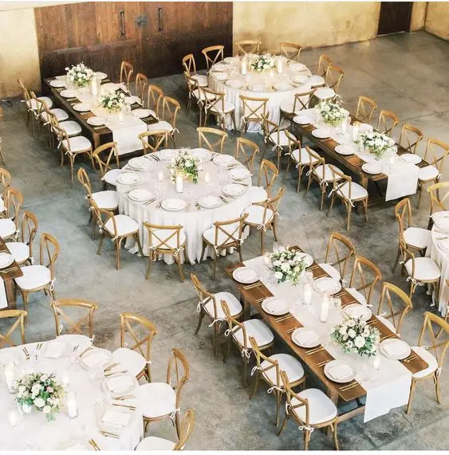
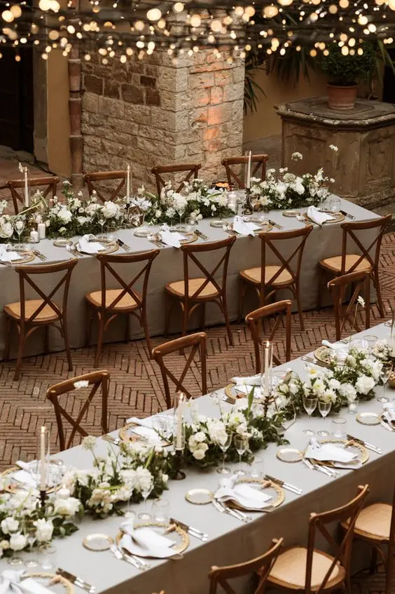
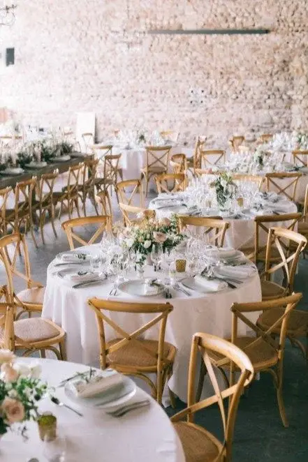
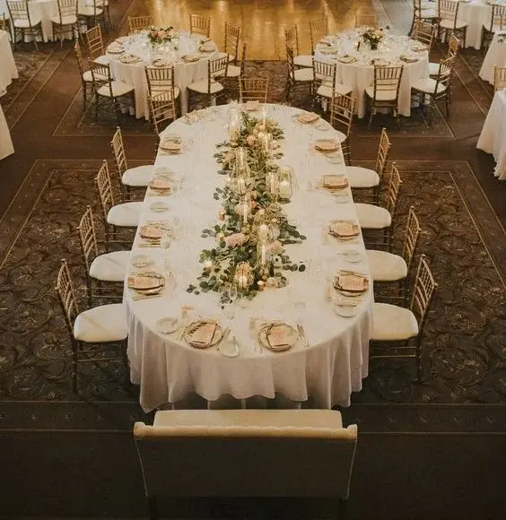
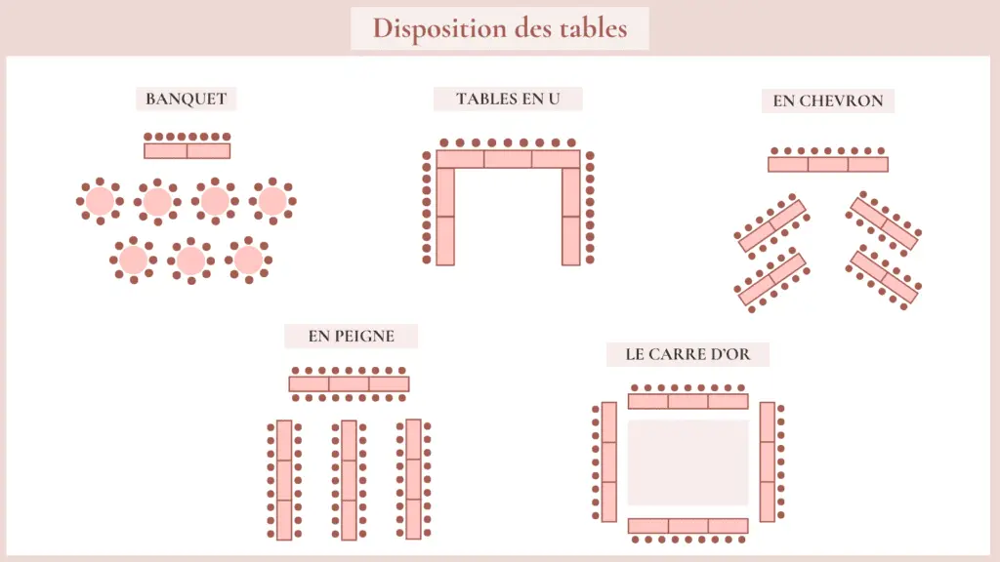
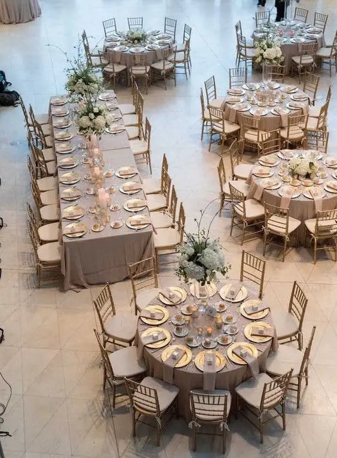
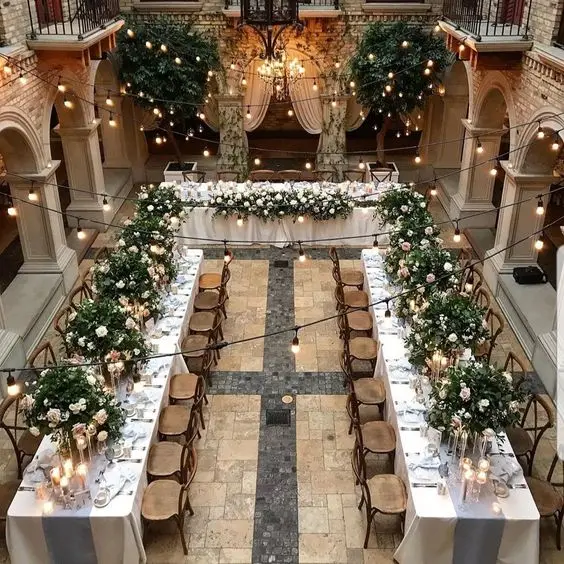
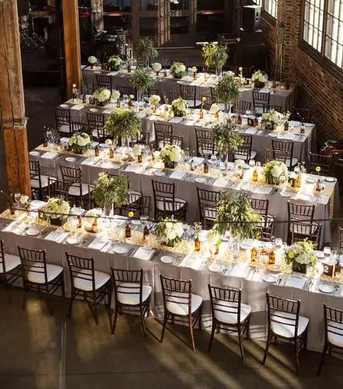
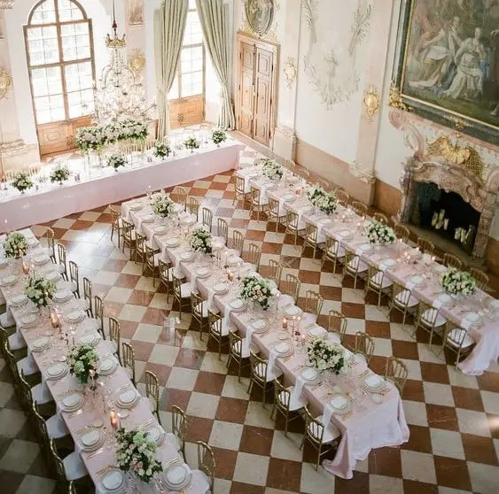
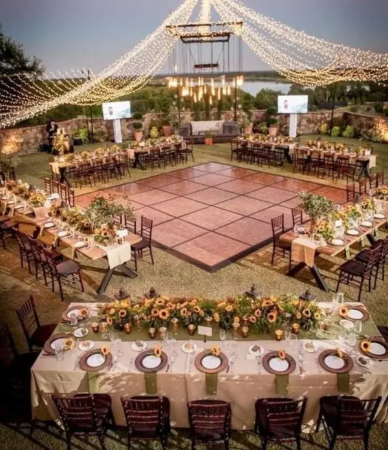

La disposition des tables lors d’un mariage est une étape cruciale pour assurer le succès du plan de table, mais c’est souvent un véritable défi à relever. Cette disposition peut véritablement influencer l’ambiance du mariage et créer une atmosphère unique et mémorable. Toutefois, décider quel type de tables choisir, comment les agencer et quelle disposition attribuer à chaque invité peut rapidement se révéler être une tâche complexe lors des préparatifs de votre jour J.
Quelles tables de mariage choisir ?
Tout d’abord, avant de décider de la composition de vos tables, l’un des points importants est de choisir au préalable vos tables de mariage. Tables, rectangulaires, rondes ou bien ovales, chaque forme à ses avantages et ses inconvénients. Le choix de vos tables est donc ESSENTIEL.
Tables rectangulaires
Les tables rectangulaires connaissent beaucoup de succès de par leur efficacité sans nom en termes de placement lors d’un mariage. Elles incarnent l’essence même de la convivialité avec leur forme accueillante, incitant à réunir les convives autour d’elles.
Pouvant généralement accueillir entre 6 et 10 personnes, ces tables sont idéales pour un banquet en plein air, le tout accompagné de bancs pour préserver cette ambiance conviviale. À l’intérieur, les bancs sont généralement remplacés par des chaises pour faciliter les déplacements et ajouter une touche d’élégance à la réception. Les avantages sont donc nombreux : les tables rectangulaires permettent une utilisation optimale de l’espace, surtout dans les salles de forme allongée. Leur configuration flexible offre une variété de possibilités d’aménagement : en U, en T, en chevron … Les options sont infinies.
De plus, leur grande surface offre de multiples opportunités de décoration, permettant de créer des décors qui impressionneront vos invités. Néanmoins, quelques désavantages sont à prendre en considération. Ces tables, bien que conviviales, peuvent rendre les conversations plus difficiles avec les convives assis à l’autre extrémité en raison de leur longueur. De plus, une décoration centrale trop imposante risque de gêner les convives situés au milieu de la table, entravant ainsi leur vue sur la table d’honneur et les festivités.


Tables rondes
Les tables rondes sont les favorites des mariés en raison de leur élégance et surtout de leur tendance à favoriser le dialogue entre les convives. En effet, leur disposition permet à chacun de se voir, facilitant ainsi les échanges et la communication. Les tables rondes, pouvant accueillir entre 6 et 12 invités selon leur diamètre, offrent une flexibilité qui les rend parfaitement adaptées aux besoins spécifiques de chaque mariage. Leurs nombreux avantages en font un choix populaire. Les tables rondes d’une part, favorisent une meilleure circulation dans la salle permettant ainsi aux convives de se déplacer aisément. De par leur disposition circulaire, elles encouragent également les échanges et la convivialité entre les convives, sans qu’il soit nécessaire de se tourner pour communiquer. Enfin, de par leur forme ronde, celle-ci offre à chacun une vue dégagée sur la table d’honneur et notamment les festivités.
Cependant, la question de la décoration peut représenter un inconvénient à prendre en compte… Il est donc important de penser à un centre de table qui soit à la fois esthétique et discret afin de ne pas gêner. Enfin, il convient de noter que les tables rondes, en raison de leur diamètre, peuvent prendre davantage de place dans la salle. Il est donc essentiel de prendre à des mesures précises de la salle de réception afin d’éviter toute surprise le jour du mariage.
Tables ovales
Les tables ovales sont l’alternative parfaite alliant à la fois l’élégance des tables rondes à la praticité des tables rectangulaires. Avec leur capacité à accueillir un nombre variable de convives, généralement entre 6 et 10 invités, ces tables s’adaptent facilement à différents groupes de taille, offrant ainsi une flexibilité appréciée lors de la planification du plan de table. Ainsi, elles offrent une multitude d’avantages.
Leur forme allongée permet une optimisation de l’espace, facilitant la circulation des invités et permettant par ailleurs des échanges plus simple entre eux. De plus, ces tables permettent une diversité en termes de décoration, permettant la mise en place de centre de table ou d’éléments décoratifs plus linéaire.
Cependant, ces tables ne sont pas souvent disponibles voir existante à la location et de par leur rareté, celles-ci ont souvent un coût plus élevé que ses homologues rondes ou rectangulaires.

Comment disposer les tables de mariage ?

L’autre aspect essentiel du plan de table de votre mariage réside dans le choix de la disposition des tables. En effet, cette disposition constitue un élément clé qui aura un impact significatif sur l’atmosphère et l’ambiance de votre réception. Table en U, en mode banquet, en chevron …, Les options sont multiples.

En banquet
La disposition en banquet est généralement la disposition la plus choisie par les mariés. Les tables rondes des invités permettront de diriger le regard vers la table d’honneur qui est placé à l’avant de la salle afin qu’elle soit en évidence. Cette disposition, de par leur forme ronde, les tables vont encourager les échanges et la convivialité entre les invités. Cependant, les tables rondes étant plus imposantes, il est indispensable de connaître les dimensions de la salle de réception.
Tables en U
La disposition en forme de U est particulièrement adaptée aux salles rectangulaires, offrant la possibilité de positionner la table d’honneur au centre du U. Cette disposition offre ainsi une vue panoramique sur l’ensemble des invités, créant une ambiance chaleureuse et favorisant l’inclusivité de tous les invités. Par ailleurs, la table en U permet une circulation simplifiée pour les invités ainsi que pour le personnel de service. Toutefois, cette configuration peut présenter des inconvénients lorsqu’il s’agit d’un mariage avec un grand nombre d’invités, car elle peut entraîner une distance plus importante entre les convives.


En chevrons
La disposition en chevron pour un mariage est une option assez originale. Les tables disposées en forme de V guide le regard vers le centre de la salle mettant ainsi en évidence la table d’honneur. Cependant, il est à noter que cette configuration nécessite une salle suffisamment spacieuse pour éviter tout sentiment d’encombrement. Il est donc important de bien connaître les dimensions de son lieu de réception.
En peigne
La disposition en peigne pour le plan de table est la meilleure option pour un grand mariage. Les tables disposées en ligne droite, avec la table d’honneur au centre, attirent naturellement le regard vers l’avant de la salle. L’agencement en peigne favorise et encourage la discussion entre les invités, créant donc une ambiance conviviale et festive à sa réception. Néanmoins, de par la longueur des tables, il est indispensable de prendre en compte les dimensions de son lieu de réception.


Le carré d’honneur
La disposition en carré d’honneur est une disposition qui apporte une touche d’originalité à la réception. Les tables rectangulaires sont disposées en forme de carré ou de rectangle, créant ainsi un espace central pour la piste de danse. Cet agencement facilite également les déplacements des invités et du personnel de service. Toutefois, le carré d’honneur nécessite une salle spacieuse pour éviter un agencement trop serré des tables. De plus, la disposition peut paraître un plus formelle et moins décontracté, il est donc important de bien réfléchir à l’atmosphère que l’on souhaite donner à son mariage.
Quelques détails à anticiper !
Après avoir choisi les tables et leur disposition, la mise en place de la salle de réception prend enfin forme. Mais il reste cependant quelques points qu’il est primordial d’anticiper.
C’est le cas notamment de la soirée dansante qui animera la suite du mariage. Outre la disposition des tables de mariage, il est essentiel de ne pas négliger les éléments clé qui donneront vie à votre soirée, à savoir le bar de nuit et la piste de danse. Ces derniers doivent être positionnés dans une zone fluide et proche l’un de l’autre. Les invités doivent pouvoir y accéder facilement et sans avoir besoin de zigzaguer entre les nombreuses tables. Car le succès d’une réception réside souvent dans les détails de son organisation.
Les astuces clés :
Qui placer à côté de qui ?
C’est LE point le plus important du plan de table. Il est essentiel de toujours placer au moins deux personnes qui se connaissent autour de chaque table afin d’éviter à certains de vos convives de se retrouver seul. N’hésitez pas non plus à placer vos invités en fonction des âges, affinités et centre d’intérêts.
Cependant, pour garantir une ambiance harmonieuse lors de votre événement, soyez attentif aux « personnalités fortes » de votre entourage afin de ne pas les placer à la même table et ainsi d’éviter les éventuels conflits familiaux et amicaux.
Les erreurs à éviter !
Pour un plan de table parfait il est primordial d’éviter certaines erreurs courantes comme placer les personnes âgées près des enceintes, ce qui risquerait de les déranger ou de séparer un couple. Il est également conseillé d’éviter de regrouper les célibataires à une même table pour éviter l’ambiance « speed dating » et inversement placer une personne seule entre des couples pour lui éviter de tenir la chandelle.
Demander de l’aide aux parents et beaux-parents
N’hésitez pas à déléguer certaines tables à vos parents et beaux-parents, surtout s’ils ont convié certains de leurs proches et amis. Les impliquer dans les préparatifs vous libérera de certaines responsabilités et ils seront également ravis de vous prêter main forte dans l’organisation.
Placer ou non les invités ?
Il est crucial de déterminer si vous préférez attribuer une place spécifique à chacun de vos invités ou simplement leur assigner une table, leur laissant ensuite la liberté de choisir leur siège à cette table.
Et les enfants ?
Il est impératif de prendre en compte la présence des enfants. Souvent, ceux-ci dînent ensemble avec les baby-sitters lors du cocktail. De plus, veillez à ne pas isoler un adolescent en le plaçant seul à la table des enfants, mais plutôt à côté de jeunes adultes.
Mon rôle ?
En tant que wedding planner et designer basé dans la région bordelaise, mon objectif est de vous accompagner dans les préparatifs de votre jour J. Je m’engage à répondre pleinement à vos besoins et à vos envies, tout en vous fournissant des conseils avisés. Mon objectif est de mettre en œuvre mes services sur mesure afin de créer un mariage entièrement personnalisé à votre image. L’aménagement de la salle de réception peut parfois être complexe, c’est pourquoi je suis là pour vous aider à faire les choix appropriés en matière de tables, de disposition et de plan de table, en veillant à ce que chaque détail soit minutieusement pris en compte. Je suis présente à vos côtés à chaque étape de l’organisation afin de garantir que votre mariage soit à la hauteur de vos attentes et reflète parfaitement votre vision.